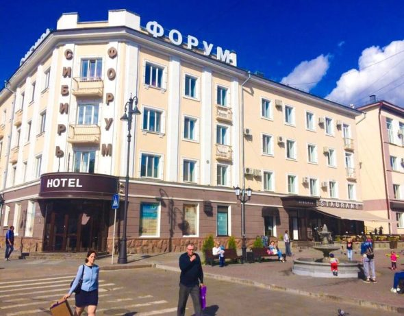

Отель «FSe» Томск

- «FSe» расположен в самом сердце города Томска. В пешей доступности от отеля расположены: памятник А.П.Чехову, Новособорная площадь с Городским садом, Воскресенская церковь, Томский Государственный Университет, многочисленные объекты деревянного зодчества и др.
- Теплый и радушный прием ожидает Вас с момента регистрации в нашем отеле. К услугам гостей мы предлагаем номера различных категорий – от комфортного «стандарта» до роскошного «люкса». Весь номерной фонд отеля обновлен в соответствии со всеми современными требованиями к средствам размещения (проводится регулярное обновление и модернизация).
- Проживание в «Forum-Hotel» станет приятной частью Вашего визита в Томск – сибирский город, который готов подарить своим гостям массу интересных впечатлений!
- Идеальное расположение в самом центре города
- Непосредственная близость главных культурных объектов города
- Шаговая доступность остановки общественного транспорта
- В стоимость проживания входит завтрак
- Бесплатный скоростной Wi-Fi
- Бесплатная охраняемая парковка
- Разумное соотношение комфорта и стоимости проживания